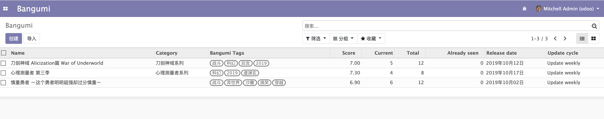
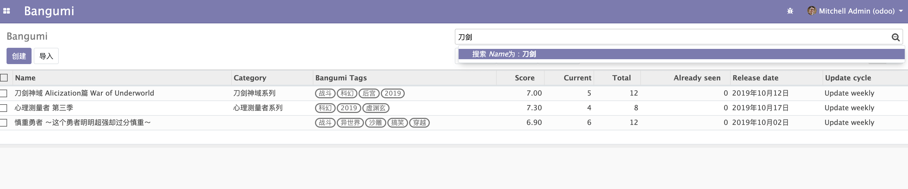

搜索视图 Search View
上一节我们介绍了如果自定义 Form 表单，并且创建了数据。这里我又创建多了两条数据，在 Tree 视图的效果如下。

是不是已经有一点基本的样子了，让我们继续完善它。一个 Web 服务最重要的搜索功能不能少，当数据多的时候可以方便数据检索，接下来我们就完善它的搜索功能。
odoo 虽然默认支持搜索，但是搜索功能很不友好，在输入提示这里也只有 Name 字段做了搜索提示。当然你也可以点击筛选做更高级的搜索，但是搜索这种重复使用的功能如果操作复杂就不好用了。

所以接下来我们要使用 Search View （搜索视图）来完善搜索功能。同样的我们需要在 views.xml 下定义该视图，以下是定义。
<record model="ir.ui.view" id="view_bangumi_bangumi_search">
<field name="name">bangumi.search</field>
<field name="model">bangumi.bangumi</field>
<field name="arch" type="xml">
<search>
<field name="name"/>
<field name="category_id"/>
<field name="tag_ids"/>
</search>
</field>
</record>
Search View 与之前的定义不同的地方也是 <search></search>，然后需要在 <search> 标签中间添加你需要搜索提示的字段。Odoo 默认会使用这些字段的 name 字段作为搜索，当然一些情况下你可能不一定以外键字段的 name 字段作为搜索条件，这时候你就需要显式指定了。
<record model="ir.ui.view" id="view_bangumi_bangumi_search">
<field name="name">bangumi.search</field>
<field name="model">bangumi.bangumi</field>
<field name="arch" type="xml">
<search>
<field name="name"/>
<field name="category_id" filter_domain="[('category_id.name', 'ilike', self)]"/>
<field name="tag_ids" filter_domain="[('tag_ids.name', 'ilike', self)]"/>
</search>
</field>
</record>
filter_domain 为你定义的搜索条件，可以参考这个章节 过滤表达式 Domain，其中 self 表示用户传入的搜索值，如用户搜索 2019 则 self 的值就为 2019。
更新一下应用并刷新页面看一下效果。